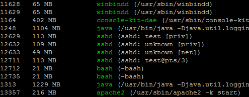

procvm is a linux shell script that list VM RSS and VM Size (from /proc/<pid>), PID and comand for each running process.
Usage
Note: root access is needed. Example:chmod +x procvm.sh sudo ./procvm.sh PID VmRSS VmSize Name (Path) 1063 3 MB 18 MB gdm-session-wor (/usr/lib/gdm/gdm-session-worker) 1070 3 MB 16 MB upowerd (/usr/lib/upower/upowerd) 1074 1 MB 18 MB rtkit-daemon (/usr/lib/rtkit/rtkit-daemon) 1354 1 MB 13 MB winbindd (/usr/sbin/winbindd) 1385 1 MB 13 MB winbindd (/usr/sbin/winbindd) 1448 0 MB 1 MB getty (/sbin/getty -8 38400 tty1)
Roadmap
Future Features:- Filter by VM size.
- Order by VM size.
- Units: KB, MB, GB, ...
Screenshot
Source Code
All the source code is online at https://github.com/pmav/procvm.